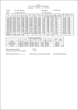
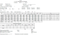
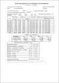
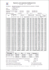
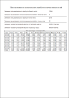
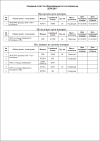
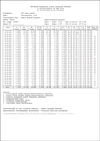

В этом каталоге вы можете загрузить и установить отчётные формы, не входящие в основную поставку ЛЭРС УЧЁТ.
| Скриншот | Название | Описание | Тип объекта | Мин. версия | Установка |
|---|---|---|---|---|---|
|  | ВКТ7_НС | Отчётная форма, повторяющая отчёт программы VKT7Easy2. Содержит информацию о нештатных ситуациях вычислителей ВКТ-7. Отчётная форма предназначена для объектов учёта с двумя точками: Теплоснабжение и ГВС. Для правильного формирования интеграторов, настройте параметры расчёта и хранения по инструкции из этой статьи. | Объект учёта | 3.07 | Установить |
|  | ВКТ7Easy2 | Отчётная форма, повторяющая отчёт программы VKT7Easy2, с подробной расшифровкой нештатных ситуаций по параметраи. В отличие от предыдущей отчётной формы, в которой просто устанавливается признак наличия НС. Отчётная форма предназначена для объектов учёта с двумя точками: Теплоснабжение и ГВС. Для правильного формирования интеграторов, настройте параметры расчёта и хранения по инструкции из этой статьи. | Объект учёта | 3.50 | Установить |
|  | КМ-5 | Отчётная форма, повторяющая отчёт программы KM5DB. Содержит информацию об ошибках прибора. Для правильной работы необходимо считывать архив событий. | Точка учёта | 3.07 | Установить |
|  | Теплоснабжение со сдвигом меток времени | Отчётная форма повторяет вид системной отчётной формы для систем "Теплоснабжение". Отличие заключается в том, что все метки времени сдвинуты на одни сутки (час) вперёд. Поведение отчётной формы повторяет поведение (но не внешний вид) отчётов программы ПРОЛОГ. Обратите внимание, что из-за сдвига меток времени в сформированном отчёте интервал отличается от того, который вы задали. Если при формировании введены даты с 1 по 30 число, итоговый отчёт будет содержать метки времени с 2 по 31. | Точка учёта | 3.07 | Установить |
|  | Использование пользовательских атрибутов и вычисляемых полей | Пример использования пользовательских атрибутов и вычисляемых полей в отчётных формах. В отчетной форме на примере сравнения договорных нагрузок с фактическим потреблением демонстрируется механизм использования вычисляемых полей. Отчетная форма может быть доработана вами под ваши нужды. | Точка учёта | 3.20 | Установить |
|  | Сводный отчёт по оборудованию | Пример использования сводного отчета по оборудованию для вывода информации о поверке. В отчетной форме на примере сводного отчета демонстрируется механизм использования подотчетов и фильтрации данных.. Отчетная форма может быть доработана вами под ваши нужды. | Объект учёта | 3.21 | Установить |
|  | Использование стандартных кодов ошибок | Пример использования стандартных кодов ошибок. Коды ошибок могут считываться из архива ошибок прибора или формироваться путем анализа данных потребления. Выбор способа формирования кодов ошибок зависит от значения параметра CheckConsumptionDataForIncidents, задаваемого на вкладке Параметры списка полей отчетной формы. Если параметр CheckConsumptionDataForIncidents = Да, то коды ошибок определяются по данным потребления. Если параметр CheckConsumptionDataForIncidents = Нет, то коды ошибок считываются из архива ошибок прибора. Отчетная форма может быть доработана вами под ваши нужды. | Точка учета | 3.33 | Установить |